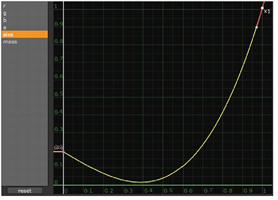

使用 ParticleCurve，可以将曲线应用于粒子属性 (如大小或质量)，以便随时间进行更改。
| 1。 | 将节点连接到粒子节点流。 |
| 2. | 调整 ParticleCurve 属性面板中的曲线。X 轴表示粒子的寿命。 |
• r -调整红色通道的曲线。
• g -调整绿色通道的曲线。
• b -调整蓝色通道的曲线。
• 一个 -调整 alpha 通道的曲线。
• 尺寸 -调整粒子大小的曲线。
• 质量 -调整粒子质量的曲线。
|
 |
|
修改粒子以生长的尺寸曲线
在他们生命的尽头。 |
注意: 如果使用图像或 3D 对象作为粒子发射器的粒子输入，ParticleCurve 可能不会按预期改变粒子的颜色。
| 3. | 如果需要，您可以调整粒子 alpha 通道的曲线，以便每个粒子在其生命周期结束时逐渐消失。 |
|
|